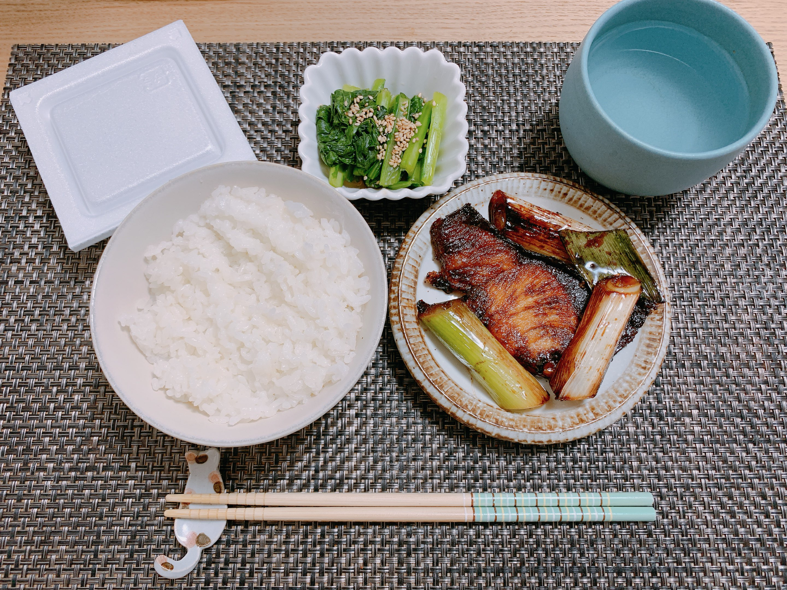

やったこと
- 買い物
- 領収書提出
- racco 週報・月報の実装
- 新歓パンフ手引き 途中まで
- 夕ご飯作った
Gatsby触ったけどGraphQL面白いな〜、とか世に出回ってるスターターを名乗るリポジトリ、ほとんど動かないじゃんね、とか思った。地道にやっていきたい。普通にのんびり勉強している時間は全くない。
感想
やや焼きすぎたけど脂が乗っていておいしかった。
今年は年始に買った男子ご飯の本を埋めて行くことにしたので、早速作った。いきなりカニの甲羅や鰤のアラを要求されて平カスには荷が重いよ...と思って行ったら案の定置いてなかった。桜カスミかロピア行ったら置いてるかもしれない。
洗濯機がまた壊れた。今回は給水しない感じらしく、凍結を疑っている。いや、流石に寒くても洗濯機凍結してたら厳しいんだけど...。明日様子を見てみたい。洗濯物を入れすぎて動いていないとか、そういう簡単な問題だといいなあと思っている。